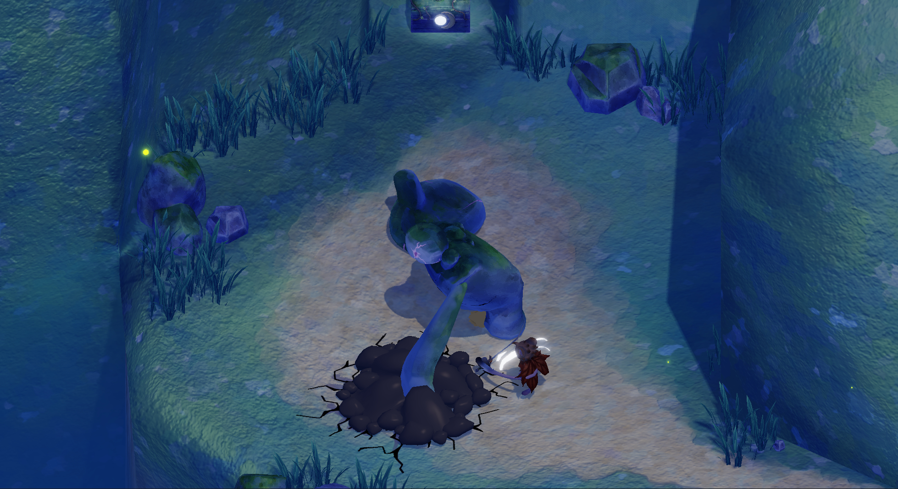
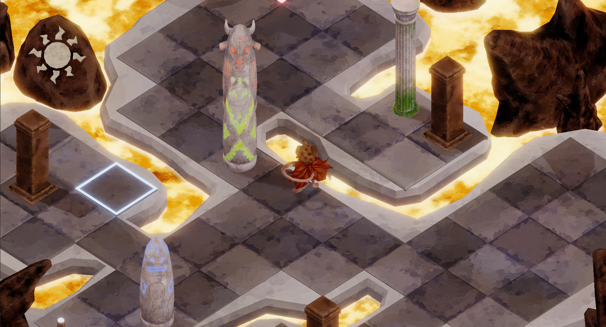

Sep 2025 - Present
13 months
Level Designer and QA
Forbidden Candy
Designing levels and testing the game at a studio in Barcelona.
Technical game designer
I design and build gameplay: mechanics, balance and game feel.
I'm Pau González Cayuela, a game designer from Barcelona studying Game Design and Development at CITM, part of the Universitat Politècnica de Catalunya (UPC). I got hooked on design as a kid, making custom levels for Mario and Portal.
I work on both sides of a game: mechanics, balance, level design and game feel on the design side, and gameplay code in C#, C++, Unity and Unreal Engine 5 on the technical side. My work has earned university honor titles and game jam awards.
I want to join a team that makes memorable games and keep growing as a designer.

Barcelona, Spain
Coda, Figma, Machination and Excel
Unreal Engine 5, Unity and custom engines
Level designer and QA at Forbidden Candy
Forbidden Candy
Designing levels and testing the game at a studio in Barcelona.
The Blue Dot Studio
Led the design of a game and prototyped mechanics fast, bridging design and engineering.
Mini-Knight Studio
Worked on The Fable of the Eclipse: player, combat, enemies, perks and a full lava map.
Universitat Politècnica de Catalunya
Helped students with Game Mathematics and Game Programming I and II.
75 Studio
Co-founded an indie studio with four teammates and released two playable demos to pitch to publishers.
itch.io
Took part in 8 game jams with different teams.
Use the arrows to move between projects.





Send me an email and I will reply as soon as I can.
gpaucayuela@gmail.com